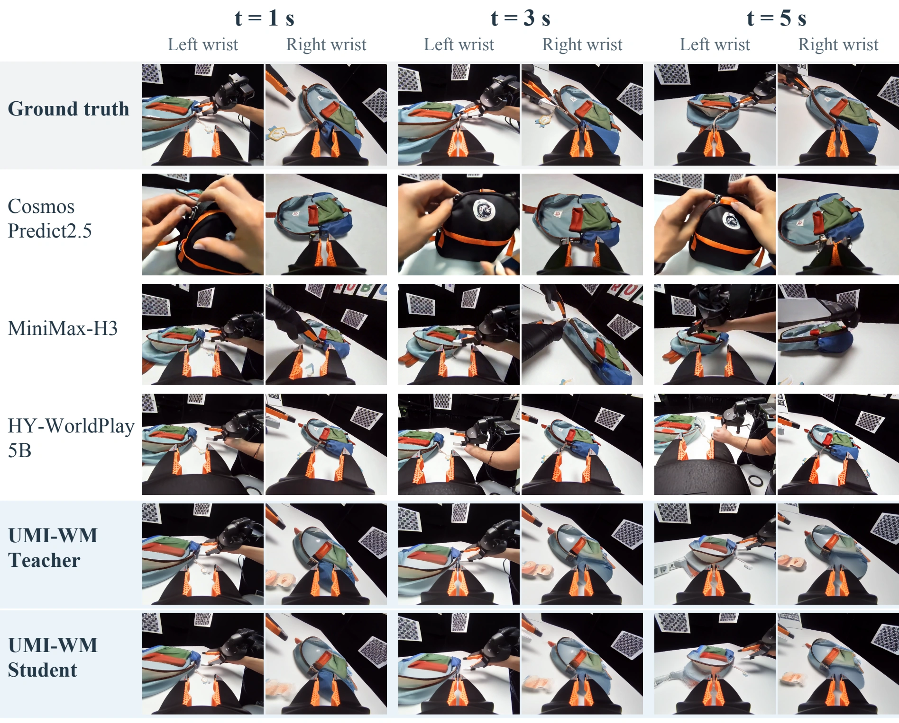
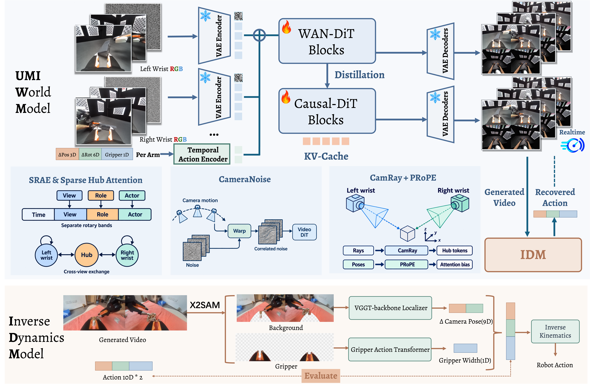
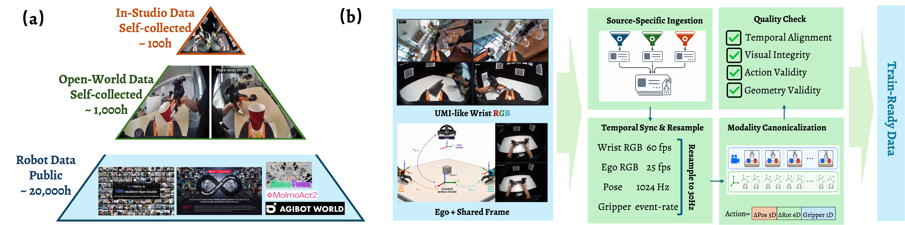

UMI-WM: Interactive World Modeling for Bimanual Manipulation from Wrist Cameras
jingxiangguo@u.nus.edu · †Corresponding authors
Paper Overview
Abstract
Universal Manipulation Interface (UMI) pairs wrist-camera videos with camera trajectories and gripper openings, providing scalable, robot-free data for learning how bimanual actions change a shared scene. Existing interactive world models, however, typically rely on text or single-camera control and struggle to follow each arm's actions while maintaining consistency between the two wrist views. We introduce UMI-WM, an action-conditioned bimanual world model that jointly generates both wrist views from observation history, per-arm relative camera poses, and gripper widths, with cross-view consistency, action following, and visual fidelity. UMI-WM injects each arm's actions into its own wrist stream, while sparse hub tokens exchange scene information between the two streams. Camera-aware geometry conditioning and camera-guided noise further support per-view motion control and cross-view geometric exchange. We adapt the model for block-causal generation and distill the 30-step Teacher into a Student with four denoising steps. We train UMI-WM on self-collected open-world and in-studio UMI recordings combined with public manipulation data. To evaluate action following, we use an inverse dynamics model (IDM) to recover relative camera poses and gripper widths from generated videos, and introduce Bimanual Action Fidelity (BAF) to measure how closely these recovered actions match the conditioning actions. UMI-WM achieves the best results on all five reference-video fidelity metrics and the best or competitive performance on VBench and WorldArena. The Teacher and Student outperform all compared baselines in action following, while the four-step Student generates paired wrist videos 6.9× faster than the Teacher.
Paired-Wrist Video Predictions
Synchronized paired-wrist predictions across five tasks.
Three timestamps from the paper

Quantitative Results
Evaluation uses 320 held-out UMI episodes with 1,008 paired-wrist windows. The Teacher leads PSNR, LPIPS, FID, and FVD, while the Student leads SSIM. Both variants outperform all compared baselines in Bimanual Action Fidelity (BAF), which measures agreement between conditioning actions and actions recovered from generated videos.
| Model | PSNR ↑ | SSIM ↑ | LPIPS ↓ | FID ↓ | FVD ↓ | BAF ↑ | Paired FPS ↑ |
|---|---|---|---|---|---|---|---|
| Wan2.2 TI2V-5B | 8.345 | 0.312 | 0.715 | 99.76 | 3477.06 | 18.64 | 0.18 |
| Cosmos Predict2.5 | 7.759 | 0.308 | 0.685 | 98.62 | 967.40 | 17.54 | 0.10 |
| MiniMax-H3 | 9.477 | 0.371 | 0.577 | 58.91 | 687.94 | 15.20 | 0.70 |
| Gamma-World ◇ | 12.264 | 0.548 | 0.397 | 40.30 | 331.25 | 52.93 | 0.55 |
| HY-WorldPlay 5B | 8.599 | 0.338 | 0.606 | 68.15 | 638.08 | 36.53 | 0.81 |
| LingBot-World-Fast | 7.660 | 0.270 | 0.752 | 128.16 | 2190.36 | 24.19 | 2.32 |
| UMI-WM Teacher | 12.513 | 0.576 | 0.332 | 33.52 | 232.53 | 76.36 | 0.26 |
| UMI-WM Student | 12.334 | 0.580 | 0.336 | 37.89 | 284.68 | 71.55 | 1.81 |
◇ Gamma-World is fine-tuned on the UMI training split. FID and FVD use one selected window per episode. Paired FPS counts synchronized wrist-frame pairs on one A100-80GB GPU. The four-step Student reaches 1.81 paired FPS versus 0.26 for the 30-step Teacher, a 6.9× offline speedup. Scores use two generation seeds and equal episode weights; BAF is an action-agreement score, not a task-success percentage.
VBench and WorldArena results
| Model | VBench Subject consistency ↑ | VBench Background consistency ↑ | VBench Motion smoothness ↑ | VBench Imaging quality ↑ | WorldArena JEPA similarity ↑ | WorldArena Photometric smoothness ↑ | WorldArena Perspectivity ↑ |
|---|---|---|---|---|---|---|---|
| GT video | 0.860 | 0.926 | 0.984 | 0.716 | 1.000 | 3.377 | 3.750 |
| Wan2.2 TI2V-5B | 0.824 | 0.903 | 0.988 | 0.604 | 0.059 | 1.827 | 3.875 |
| Cosmos Predict2.5 | 0.688 | 0.850 | 0.974 | 0.631 | 0.284 | 1.747 | 3.500 |
| MiniMax-H3 | 0.768 | 0.874 | 0.982 | 0.609 | 0.080 | 1.772 | 3.375 |
| Gamma-World ◇ | 0.874 | 0.933 | 0.984 | 0.655 | 0.382 | 4.236 | 3.375 |
| HY-WorldPlay 5B | 0.825 | 0.899 | 0.968 | 0.705 | 0.135 | 2.296 | 3.250 |
| LingBot-World-Fast | 0.627 | 0.855 | 0.958 | 0.464 | 0.179 | 1.669 | 3.250 |
| UMI-WM Teacher | 0.885 | 0.938 | 0.984 | 0.707 | 0.386 | 4.339 | 3.500 |
| UMI-WM Student | 0.875 | 0.933 | 0.984 | 0.655 | 0.408 | 4.300 | 3.125 |
Method Overview
UMI-WM jointly predicts both wrist videos from observation history and per-arm actions, represented by relative translation, a 6D rotation representation, and gripper width in 10 dimensions. Each arm’s actions are injected into its own wrist stream. SRAE encodes view, role, and actor identities, while Sparse Hub Attention exchanges scene information through learned hub tokens. CameraNoise supplies motion-aware noise, while CamRay and PRoPE provide camera-aware geometry conditioning for per-view motion control and cross-view geometric exchange. We adapt the model for block-causal generation and distill the 30-step Teacher into a Student with four denoising steps.

Data Sources and Processing Pipeline
A three-tier data pyramid combines public manipulation data, self-collected open-world UMI recordings, and calibrated in-studio recordings. The pipeline synchronizes wrist videos, camera poses, and gripper states at 30 Hz, expresses each trajectory relative to its window’s first frame, and applies calibration and quality checks. Open-world wrist trajectories remain in separate local frames; in-studio recordings register both wrists in a shared world frame. UMI-WM uses the two wrist views as visual observations.

Appendix: Physical Robot Execution
After interactive approval of a generated rollout, the IDM recovers wrist-camera poses and gripper widths. A calibrated mapping converts the poses to end-effector targets for inverse kinematics, while the recovered widths drive the grippers. The left panel shows physical robot execution; the right panel shows the corresponding wrist-view preview.